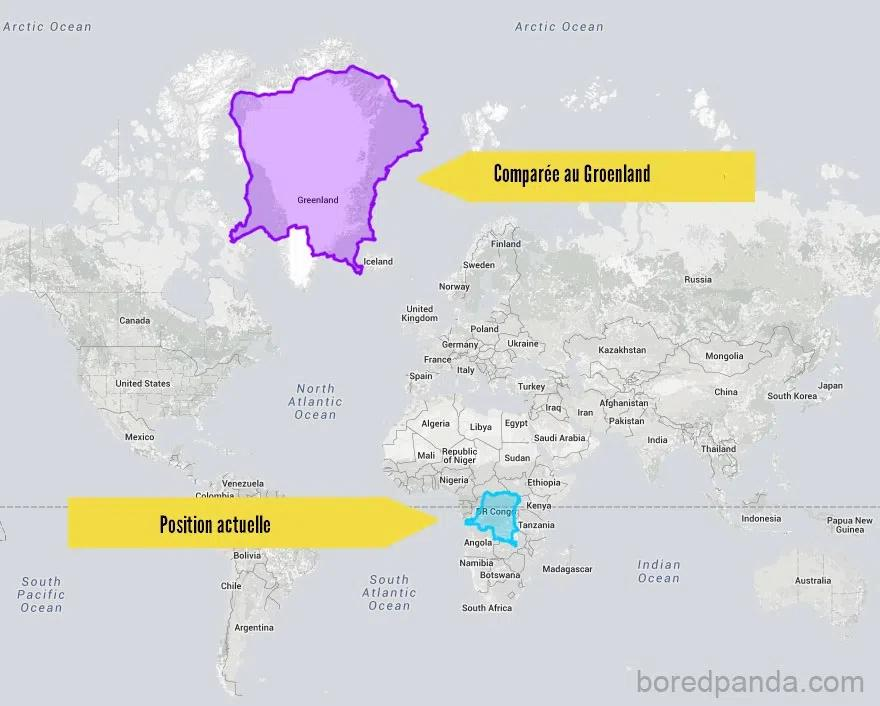
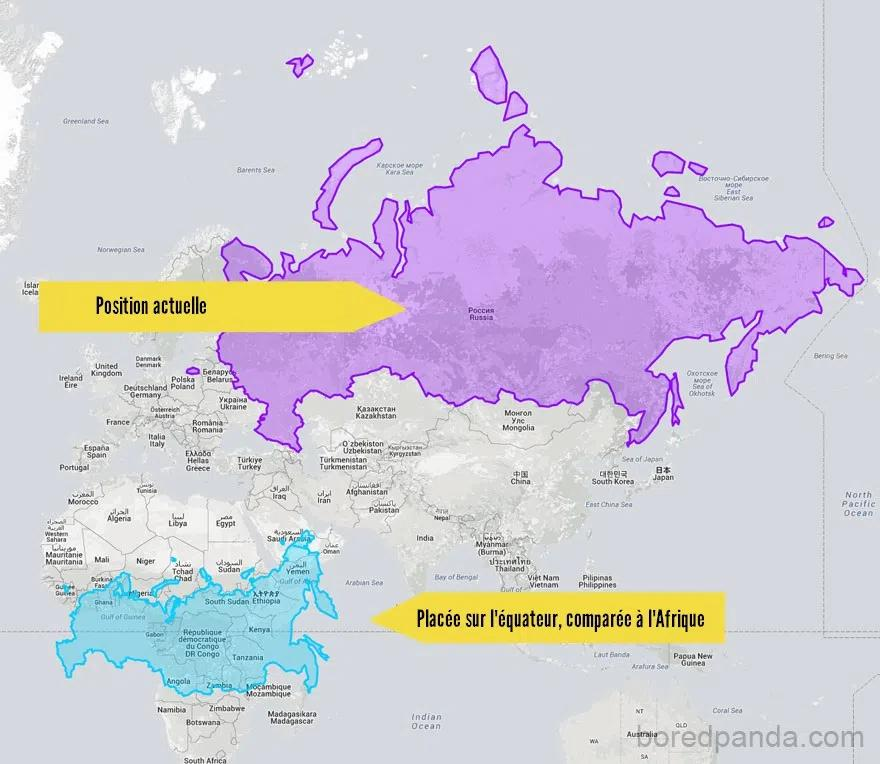
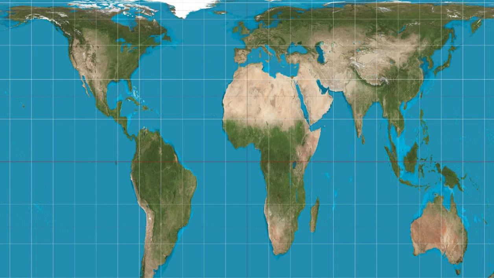

Vous vous coucherez moins bête ce soir, le saviez-vous ?
Si je vous disais que la Terre est plate, bien √©videmment vous ne me croiriez pas, et √† raison ! Maintenant, si je vous disais que la repr√©sentation du monde que vous connaissez est fauss√©e, vous ne me croiriez pas non plus, n‚Äôest-ce pas ? Et pourtant ‚Ķ La carte du monde que nous apprenons √† l‚Äô√©cole d√®s le plus jeune √¢ge est "fausse", les continents de l'h√©misph√®re sud sont BIEN PLUS GRANDS que ce que nous avons en t√™te, le saviez-vous ? ü§î
La Terre est sph√©rique nous vous le confirmons. Cette repr√©sentation a √©t√© propos√©e pour la premi√®re fois par les Grecs gr√¢ce √† l‚Äôombre de celle-ci sur la Lune (lors des √©clipses) et le fait que les bateaux disparaissaient peu √† peu √† l‚Äôhorizon. O√π vais-je en venir vous demandez-vous ? Le probl√®me d‚Äôune sph√®re, c‚Äôest que celle-ci est tr√®s difficilement repr√©sentable √† plat. Or, l‚Äôhomme a toujours cherch√© une repr√©sentation sous forme de planisph√®re pour pouvoir faciliter le choix des routes et la navigation. Lors de cette repr√©sentation, il a fallu faire un choix de projection et la plus c√©l√®bre d‚Äôentre-elles (celle qui est le plus souvent apprise √† l‚Äô√©cole) est celle de Mercator. C‚Äôest une projection cartographique de la Terre formalis√©e par le g√©ographe flamand Gerardus Mercator, en 1569, o√π les projections sont tangentes √† l'√©quateur du globe terrestre sur une carte plane. √Ä chaque point du globe, on fait une projection sur une surface plane. Vous avez besoin d‚Äôune aspirine ? Pas de panique, voici un petit sch√©ma fait maison pour illustrer le principe ü§ì :

Plus une surface est proche de l’équateur, plus sa représentation sera petite par rapport à sa « vraie taille ». Ainsi, on a tous en tête une carte où le Groenland est imposant, où la Russie est gigantesque et où l’Amérique du Nord est plus grande que celle du Sud. Pourtant, en comparant les surfaces, on a de nombreuses surprises … Par exemple, si on compare la surface du Congo par rapport à celle du Groenland et celle de la Russie par rapport à l’Afrique on a :
|  |  |
| Surface du Congo VS celle du Groenland | Surface de l'Afrique VS celle de la Russie |
Source des images : Hitek
On peut également noter que l'Afrique est 14 fois plus grand que le Groenland. De plus, on pourrait faire rentrer l'Allemagne, la France, le Royaume-Uni, l'Espagne, toute l'Europe de l'Est, les États-Unis, la Chine et l'Inde sur le continent Africain ... Ça laisse à réfléchir sur notre vision du monde, n'est-ce pas ?
Cette représentation a été conservée, car elle permet, bien qu’elle ne respecte pas certaines proportions des surfaces, de ne pas déformer les continents et de conserver les angles (pratique pour la navigation). Celle-ci a été critiquée durant ces derniers siècles, car elle a été faite par des Occidentaux qui se sont mis plus en valeurs par rapport aux pays de l’hémisphère sud. Une représentation fidèle des proportions des aires (mais malheureusement pas des angles et des distances) serait la représentation de Gall-Peters :
Pour finir cet article, nous pensons, bien qu'il soit difficile (impossible) de ne plus utiliser la repr√©sentation actuelle, qu'il serait int√©ressant d'enseigner les diff√©rentes repr√©sentations aux √©l√®ves. D'ailleurs, si vous vous posez encore des questions et que vous √™tes sceptiques, allez sur Google Map, d√©zoomez, vous pourrez alors voir, que malgr√© le fait que les surfaces ne changent pas, si vous vous d√©placez de l'h√©misph√®re nord vers celui du sud, vous pourrez apercevoir l'√©chelle changer üòâ